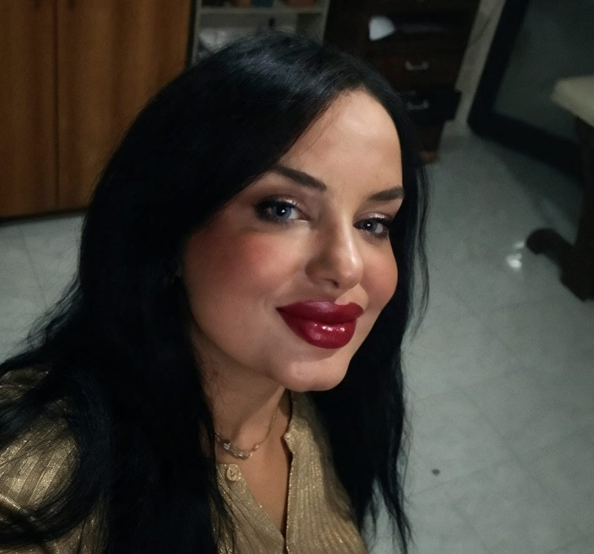

Massage à domicile à Sousse
Basé à Sahloul, notre spa vous accueille sur rendez-vous pour des massages thérapeutiques, un hammam turc et des soins du corps. Nous nous déplaçons aussi chez vous dans tout le Grand Sousse.
Sousse est notre ville : vous pouvez venir au spa de Sahloul (massage, hammam turc, hammam individuel) ou demander un massage à domicile à Khezama, Kantaoui, Hammam Sousse ou en centre-ville.
Quartiers et villes couvertes
- Sahloul
- Khezama
- Médina de Sousse
- Port El Kantaoui
- Hammam Sousse
- Chott Meriem
- Akouda
- Kalaa Kebira



Nos soins à Sousse
Massage à domicile
On vient chez vous avec tout le matériel : table de massage, huiles, serviettes.
En savoir plus →Hijama (حجامة)
Séance de hijama (ventouses) au spa de Sahloul ou à votre domicile.
En savoir plus →Hammam turc à Sahloul
Hammam turc, hammam individuel et massage thérapie à Sahloul, sur rendez-vous.
En savoir plus →Questions fréquentes
Faites-vous le massage à domicile à Sousse ?
Oui, nous nous déplaçons à Sousse sur rendez-vous. Appelez le 25213968 ou écrivez sur WhatsApp.
Quels soins proposez-vous à Sousse ?
Massage relaxant, massage thérapeutique, massage aux outils en bois et hijama selon disponibilité.
Comment réserver à Sousse ?
Indiquez votre quartier et l'horaire souhaité par téléphone ou WhatsApp ; nous confirmons l'heure d'arrivée.
Autres villes
Prête pour un moment de détente ?
Réservez votre massage à domicile ou votre hammam à Sahloul dès aujourd'hui.